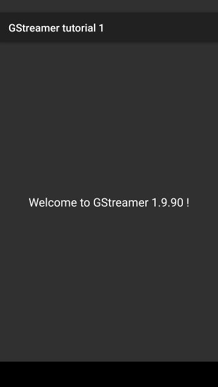

Android tutorial 1: Link against GStreamer
Goal!

This first Android tutorial is extremely simple: it just retrieves the GStreamer version and displays it on the screen. It exemplifies how to access GStreamer C code from Java and verifies that there have been no linkage problems.
Hello GStreamer [Java code]
The tutorial code is in the gst-docs in the tutorials/android-tutorial-1 subdirectory. This directories contains the usual Android NDK structure: a src folder for the Java code,
a jni folder for the C code and a res folder for UI resources.
We recommend that you open this project in Eclipse (as explained in Installing for Android development) so you can easily see how all the pieces fit together.
Let’s first introduce the Java code, then the C code and finally the makefile that allows GStreamer integration.
src/org/freedesktop/gstreamer/tutorials/tutorial_1/Tutorial1.java
package org.freedesktop.gstreamer.tutorials.tutorial_1;
import android.app.Activity;
import android.os.Bundle;
import android.widget.TextView;
import android.widget.Toast;
import org.freedesktop.gstreamer.GStreamer;
public class Tutorial1 extends Activity {
private native String nativeGetGStreamerInfo();
// Called when the activity is first created.
@Override
public void onCreate(Bundle savedInstanceState)
{
super.onCreate(savedInstanceState);
try {
GStreamer.init(this);
} catch (Exception e) {
Toast.makeText(this, e.getMessage(), Toast.LENGTH_LONG).show();
finish();
return;
}
setContentView(R.layout.main);
TextView tv = (TextView)findViewById(R.id.textview_info);
tv.setText("Welcome to " + nativeGetGStreamerInfo() + " !");
}
static {
System.loadLibrary("gstreamer_android");
System.loadLibrary("tutorial-1");
}
}
Calls from Java to C happen through native methods, like the one declared here:
private native String nativeGetGStreamerInfo();
This tells Java that there exists a method with this signature somewhere so it compiles happily. It is your responsibility to ensure that, at runtime, this method is accessible. This is accomplished by the C code shown later.
The first bit of code that gets actually executed is the static initializer of the class:
static {
System.loadLibrary("gstreamer_android");
System.loadLibrary("tutorial-1");
}
It loads libgstreamer_android.so, which contains all GStreamer
methods, and libtutorial-1.so, which contains the C part of this
tutorial, explained below.
Upon loading, each of these libraries’ JNI_OnLoad() method is
executed. It basically registers the native methods that these libraries
expose. The GStreamer library only exposes a init() method, which
initializes GStreamer and registers all plugins (The tutorial library is
explained later below).
try {
GStreamer.init(this);
} catch (Exception e) {
Toast.makeText(this, e.getMessage(), Toast.LENGTH_LONG).show();
finish();
return;
}
Next, in the OnCreate() method of the
Activity
we actually initialize GStreamer by calling GStreamer.init(). This
method requires a
Context
so it cannot be called from the static initializer, but there is no
danger in calling it multiple times, as all but the first time the calls
will be ignored.
Should initialization fail, the init() method would throw an
Exception
with the details provided by the GStreamer library.
TextView tv = (TextView)findViewById(R.id.textview_info);
tv.setText("Welcome to " + nativeGetGStreamerInfo() + " !");
Then, the native method nativeGetGStreamerInfo() is called and a
string is retrieved, which is used to format the content of the
TextView
in the UI.
This finishes the UI part of this tutorial. Let’s take a look at the C code:
Hello GStreamer [C code]
jni/tutorial-1.c
#include <string.h>
#include <jni.h>
#include <android/log.h>
#include <gst/gst.h>
/*
* Java Bindings
*/
static jstring gst_native_get_gstreamer_info (JNIEnv* env, jobject thiz) {
char *version_utf8 = gst_version_string();
jstring *version_jstring = (*env)->NewStringUTF(env, version_utf8);
g_free (version_utf8);
return version_jstring;
}
static JNINativeMethod native_methods[] = {
{ "nativeGetGStreamerInfo", "()Ljava/lang/String;", (void *) gst_native_get_gstreamer_info}
};
jint JNI_OnLoad(JavaVM *vm, void *reserved) {
JNIEnv *env = NULL;
if ((*vm)->GetEnv(vm, (void**) &env, JNI_VERSION_1_4) != JNI_OK) {
__android_log_print (ANDROID_LOG_ERROR, "tutorial-1", "Could not retrieve JNIEnv");
return 0;
}
jclass klass = (*env)->FindClass (env, "org/freedesktop/gstreamer/tutorials/tutorial_1/Tutorial1");
(*env)->RegisterNatives (env, klass, native_methods, G_N_ELEMENTS(native_methods));
return JNI_VERSION_1_4;
}
The JNI_OnLoad() method is executed every time the Java Virtual
Machine (VM) loads a library.
Here, we retrieve the JNI environment needed to make calls that interact with Java:
JNIEnv *env = NULL;
if ((*vm)->GetEnv(vm, (void**) &env, JNI_VERSION_1_4) != JNI_OK) {
__android_log_print (ANDROID_LOG_ERROR, "tutorial-1", "Could not retrieve JNIEnv");
return 0;
}
And then locate the class containing the UI part of this tutorial using
FindClass():
jclass klass = (*env)->FindClass (env, "org/freedesktop/gstreamer/tutorials/tutorial_1/Tutorial1");
Finally, we register our native methods with RegisterNatives(), this
is, we provide the code for the methods we advertised in Java using the
native
keyword:
(*env)->RegisterNatives (env, klass, native_methods, G_N_ELEMENTS(native_methods));
The native_methods array describes each one of the methods to register
(only one in this tutorial). For each method, it provides its Java
name, its type
signature
and a pointer to the C function implementing it:
static JNINativeMethod native_methods[] = {
{ "nativeGetGStreamerInfo", "()Ljava/lang/String;", (void *) gst_native_get_gstreamer_info}
};
The only native method used in this tutorial
is nativeGetGStreamerInfo():
jstring gst_native_get_gstreamer_info (JNIEnv* env, jobject thiz) {
char *version_utf8 = gst_version_string();
jstring *version_jstring = (*env)->NewStringUTF(env, version_utf8);
g_free (version_utf8);
return version_jstring;
}
It simply calls gst_version_string() to obtain a string describing
this version of GStreamer. This Modified
UTF8 string is then
converted to UTF16 by NewStringUTF() as required by Java and returned. Java will be
responsible for freeing the memory used by the new UTF16 String, but we
must free the char * returned by gst_version_string().
Hello GStreamer [Android.mk]
jni/Android.mk
LOCAL_PATH := $(call my-dir)
include $(CLEAR_VARS)
LOCAL_MODULE := tutorial-1
LOCAL_SRC_FILES := tutorial-1.c
LOCAL_SHARED_LIBRARIES := gstreamer_android
LOCAL_LDLIBS := -llog
include $(BUILD_SHARED_LIBRARY)
ifndef GSTREAMER_ROOT
ifndef GSTREAMER_ROOT_ANDROID
$(error GSTREAMER_ROOT_ANDROID is not defined!)
endif
GSTREAMER_ROOT := $(GSTREAMER_ROOT_ANDROID)
endif
GSTREAMER_NDK_BUILD_PATH := $(GSTREAMER_ROOT)/share/gst-android/ndk-build/
GSTREAMER_PLUGINS := coreelements
include $(GSTREAMER_NDK_BUILD_PATH)/gstreamer-1.0.mk
This is a barebones makefile for a project with GStreamer support. It
simply states that it depends on the libgstreamer_android.so library
(line 7), and requires the coreelements plugin (line 18). More complex
applications will probably add more libraries and plugins
to Android.mk
Conclusion
This ends the first Android tutorial. It has shown that, besides the interconnection between Java and C (which abides to the standard JNI procedure), adding GStreamer support to an Android application is not any more complicated than adding it to a desktop application.
The following tutorials detail the few places in which care has to be taken when developing specifically for the Android platform.
As usual, it has been a pleasure having you here, and see you soon!
The results of the search are